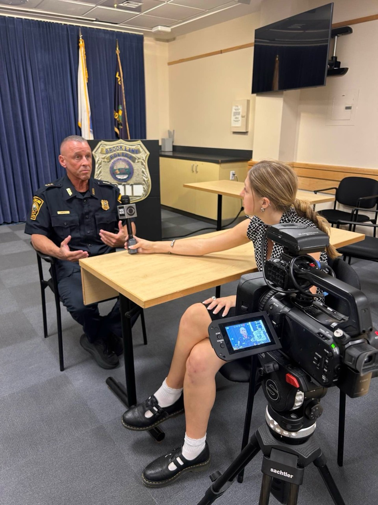

Zoe Rakarich
Zoe Rakarich is a journalist and recent graduate from the University of Massachusetts Amherst. During her time in college, she interned for TV news stations in Boston and Washington D.C., served as the Assistant Video Editor for the Massachusetts Daily Collegian, and studied abroad in Barcelona where she wrote for an arts and critical thinking magazine.
